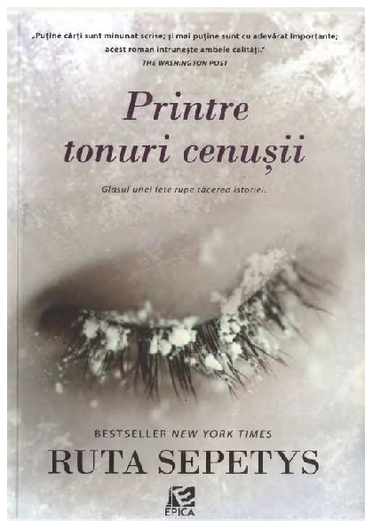

,,Printre tonuri cenușii" de Ruta Sepetys

Lina este ca orice alta fetita lituaniana de 15 ani din anul 1941. Ea picteaza, deseneaza si se indragosteste foarte usor de baietii de varsta ei. Pana intr-o seara cand ofiterii sovietici au patruns in casa lor, smulgandu-i familia din viata confortabila pe care o cunosc. Ea impreuna cu mama si fratele ei mai mic sunt separati de tatal lor si sunt fortati sa urce intr-un vagon murdar si aglomerat. Destinatia era catre nord in cercul polar in cele mai reci zone ale Siberiei intr-un lagar de lucru. Aici sunt obligati sa sape sfecla la oridinele lui Stalin si sunt nevoiti sa lupte pentru viata lor in conditiile cele mai crude.
Familia Linei facea parte din clasa de mijloc a Lituaniei in anii 1940. Ei duceau o viata confortabila si linistita. Lina era fiica cea mai mare a unui tata profesor, a unei mame frumoase si sora cea mare a unui frate mai mic. Lina are in fata lumea si toate promisiunile ei, mai ales cand primeste vestea ca a fost acceptata in una dintre cele mai prestigioase scoli de arta din toata Europa.
Cand am auzit de aceasta carte am ramas captivata datorita originii acestei povesti. Aceasta poveste are la baza faptul ca Ruta Sepetys este fiica unor emigranti lituanieni iar Printre tonuri cenusii a fost inspirata de tatal scriitoarei, fost refugiat care a scapat din Lituania cand era tanar. Sepetys face eforturi sa spuna povestea statelor baltice Letonia si Lituania, Estonia,care a disparut de pe harta in 1941 in timpul curatarii si ocuparii regiunii de catre Stalin. Acest roman capata o importanta semnificativa deoarece mda glas experientei lituaniene din timpul celui de-al doilea razboi mondial sub regimul lui Stalin. Scriitoarea spune povestea familiara a durerii de inima, a atrocitatii si a mortii (adica arestat în miezul nopții, masini pentru vite, lagare de munca, boli, foamete si moarte), dar din perspectiva lituaniana / sovietica.
Scriitoarea construieste pratic o lucrare de ficțiune istorică. Spusa din perspectiva primei persoane a Linei, urmarim si experimentam tot ceea ce se desfasoara in fata ochilor ei. În acest scop, o mare parte din roman se bazeaza pe dezvoltarea Linei ca personaj si se exemplifica prin forta naratiunii sale – ma bucur ca pot sa spun, ca sunt executate frumos. Lina este o eroina care este atat de relatabila, dar si puternica. Ea creste din fata ochilor nostri ca persoana care isimentine familia unita pe masura ce trec lunile și anii. Imi place, de asemenea, firul narativ care se întinde pe tot parcursul cartii si abilitatea de artist a Linei, dragostea ei pentru operele lui Munch si speranta pe care o exemplifica in schitele ei – pentru a lasa indicii tatalui ei, da, dar si pentru a le spune povestea familiei ei si a altor lituanieni, care sunt deportati sau care dispar sistematic. Alt personaj este în special mama frumoasa si educata a Linei, care e incununata cu o profunzime și o greutate similare ceea ce fac din acest roman, o lectură mult mai completa și mai puternica. Exista un grad de repetare a unor imagini si fraze cu carfe Lina ne incheie fiecare capitol. Unele intamplari nu ne o legatura intre trecutul ei cu prezentul ceea ce face sa rezulte o lectura neunita Anumite puncte culminainte nu ofera o relevanta reala pentru poveste. Finalul romanului este brusc, sub forma de epilog discordant fara suficienta incarcatura emotionala pentru aceasta poveste.